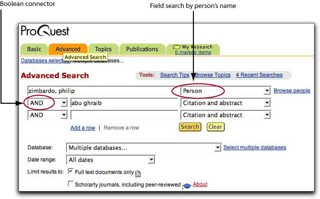

Find Reference Works
The following reference sources, shelved in the Reference Room, provide background information and history on topics.
(N.B. When looking for information in an encyclopedia, first consult the subject index, which is usually located in the back of the final volume.)
- Encyclopedia of Human Behavior. Ref BF31 .E5 1994
- Encyclopedia of Psychology. Ref BF31 .E52 2000
The Encyclopædia Britannica Online is available through the Library's website.
- Encyclopædia Britannica Onlne http://search.eb.com/
The Wikipedia is a free, Web-based encyclopedia.
- Wikipedia http://en.wikipedia.org/wiki/Main_Page
Find Books & eBooks
The Library's online catalog indexes books, e-books, pamphlets, and other material by subject, author, title, keyword, and call number. To search Voyager enter your search words in the search box and select a type of search from the pull-down menu. Below are some sample searches.
| Authoritarianism | [Subject search] |
| Government, resistance to | [Subject search] |
| Milgram, Stanley | [Author search] |
| Milgram +Zimbardo | [Keyword search] |
| "civil disobedience" | [Keyword search] |
Since LBCC Library has a partnership agreement with CSULB, you may check out books from the University Library. To identify books, search CSULB's online catalog, called Coast, which is accessible over the Web at http://coast.csulb.edu.
Find Articles
The Library subscribes to a number of online databases, which are accessible over the World Wide Web from the Library's homepage. Some databases need passwords. A handout of the passwords is available at the Reference Desk.
ProQuest
Offers thousands of articles on a wide variety of topics. ProQuest provides access to approximately 1,500 scholarly journals, general-interest magazine, and newspapers, many of them full-text, covering all major fields of study in the humanities, social sciences, and science and technology. Dates of coverage vary, but some are available from 1985 to the present. The database is updated daily. Password required.
Facts on File Databases
A good source of primary documents and images. Files include American History Online, American Women's History Online, African-American History Online, American History Online.
CQ Researcher
CQ Researcher explores a single "hot" issue in the news in depth each week. Topics range from social issues to science and technology. There are 44 reports each year, including four expanded reports. Each report contains a Pro/Con debate useful for argumentative papers and speeches.
SIRS Reporter
FACTS.com
Opposing Viewpoints
Google News Archive Search
Google Scholar
Find Websites
Subject Directories
Use subject directories, such as Infomine (Infomine) and Librarians' Internet Index (lii.org) to find website evaluated by librarians and found to be reliable.
Search Engines
Use search engines such as Google (www.google.com) and Ask.com to find websites crawled by robots and entered into the engine's index.
Cite Your Sources
Remember to list the sources used in your research in a bibliography or works-cited page following a documentation style, such as MLA (Modern Language Association). The most up-to-date guides for citing Web pages and other electronic sources in footnotes and bibliographies are on the Web, and they are accessible from the Library's homepage at http://lib.lbcc.edu. Click on "Internet Resources," then click on "Citation Guides."